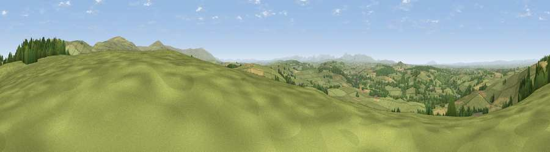

Viewpoint near Ainstable
#3710 in England · top 12% of its area beats it · near AinstableThe view, rendered

A 360° render of this exact spot computed from the terrain model, tree cover and land cover — summer colours, afternoon light, calibrated against photographs of famous viewpoints. Real trees, hedges and buildings will differ in detail.
The panorama
Grey silhouette: terrain skyline in each direction (720 bearings, Earth curvature and refraction included). Dashed green: skyline with trees (+15 m) and buildings (+8 m) as obstacles. Blue strip: how far the ground is visible on each bearing.
Where the view opens
Wedge length = distance to the farthest visible ground on that bearing (vegetation-aware). Rings at 10, 25 and 50 km.
What fills the view
75% grassland · 13% woodland · 11% cropland ·
Angular shares of the visible panorama (visual magnitude), not map area. Landscape diversity 0.34 (0–1 Shannon).
Key numbers
More beautiful places nearby
The staircase of upgrades: each row has a higher view potential than everything closer. Driving times are estimates from straight-line distance, calibrated against real road routing — check an actual route before setting out.
| Place | Direction | Drive | Score |
|---|---|---|---|
| Viewpoint near Cumrew | NNE · 5 km | ~10 min | 78.8 |
| Barrock Fell | W · 7 km | ~14 min | 81.1 |
| Viewpoint near Watermillock | SSW · 28 km | ~45 min | 82.6 |
| Viewpoint near Watermillock | SSW · 28 km | ~45 min | 83.5 |
| Skiddaw South Top | SW · 33 km | ~51 min | 85.8 |
| Viewpoint near Applethwaite | SW · 34 km | ~53 min | 86.7 |
| Long Side | SW · 35 km | ~53 min | 89.5 |
| Viewpoint near Finsthwaite | SSW · 61 km | ~84 min | 90.3 |
54.82579, -2.72530 · source: screening · position refined by local search. Computed location — check access rights before visiting.